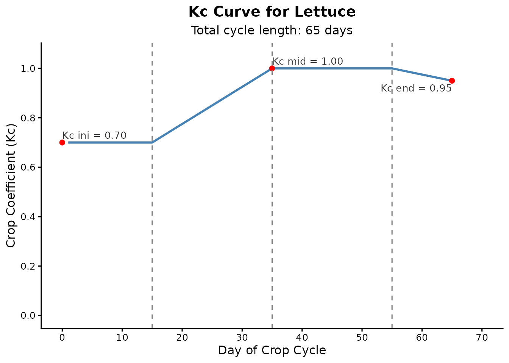

The irritool package is continuously developing and offers a growing set of R tools for modeling the soil-water-plant-atmosphere system. While the package includes features for extracting gridded climate data and other agronomic analyses, this tutorial focuses specifically on the core irrigation management workflow.
Below, we demonstrate the fundamental steps to estimate crop water requirements and simulate the daily soil water balance, which is highly useful for crop planning and water deficit analysis.
1. Preparing Climate Data
To calculate the soil water balance, the first step is to obtain daily meteorological data. For this educational example, we will simulate 65 days of reference evapotranspiration (ET0) and rainfall data directly in R.
2. Building the Crop Coefficient (Kc) Curve
Crops consume water at different rates depending on their
phenological stage. The calc_kc_curve() function uses the
FAO-56 methodology to build the daily Kc series.
Let’s simulate a 65-day vegetable crop cycle (e.g., Lettuce), divided into four stages: Initial, Crop Development, Mid-Season, and Late-Season.
# Defining Kc parameters and stage lengths (in days)
kc_params <- c(0.7, 1.0, 0.95)
stages <- c(15, 20, 20, 10)
lettuce_curve <- calc_kc_curve(
kc_points = kc_params,
stage_lengths = stages,
crop = "Lettuce"
)
# Viewing the automatically generated plot
lettuce_curve$kc_plot
3. Simulating the Soil Water Balance
With the climate data and daily Kc values established, we can run the
soil moisture simulation. The calc_water_balance() function
monitors the Total Available Water (TAW), Readily Available Water (RAW),
and the current depletion (deficit).
We will use the "threshold" irrigation rule, which
automatically applies water whenever the soil depletion exceeds the RAW,
ensuring the plant does not suffer from water stress.
# Soil and root system parameters
root_depth_val <- 300 # mm
theta_fc_val <- 0.30 # Field capacity (m3/m3)
theta_wp_val <- 0.15 # Wilting point (m3/m3)
p_factor_val <- 0.55 # Depletion factor (p)
balance_results <- calc_water_balance(
et0 = eto_sim,
rainfall = rain_sim,
daily_kc_values = lettuce_curve$kc_serie,
root_depth = root_depth_val,
theta_fc = theta_fc_val,
theta_wp = theta_wp_val,
depletion_factor = p_factor_val,
initial_depletion = 0, # Starting at field capacity
irrigation_rule = "threshold"
)Analyzing the Results
The function returns both the detailed daily data and a summary of the accumulated totals over the cycle.
# Checking the total depths for the entire cycle
balance_results$summary_depths
#> $total_rainfall
#> [1] 133
#>
#> $total_water_surplus
#> [1] 17.755
#>
#> $net_rainfall
#> [1] 115.245
#>
#> $total_etc
#> [1] 271.7475
#>
#> $total_irrigation_applied
#> [1] 156.5025
#>
#> $irrigation_events_count
#> [1] 6The summary shows exactly how much total irrigation was applied and how many irrigation events were triggered to keep the crop out of the stress zone.
We can also inspect the detailed daily log to analyze the water dynamics day by day:
# Viewing the first 10 days of the balance
head(balance_results$water_balance_data, 10)
#> day rainfall et0 root_depth taw raw depletion_start kc ks etc
#> 1 1 0 5.7 300 45 24.75 0.00 0.7 1 3.99
#> 2 2 0 5.8 300 45 24.75 3.99 0.7 1 4.06
#> 3 3 0 3.9 300 45 24.75 8.05 0.7 1 2.73
#> 4 4 0 5.5 300 45 24.75 10.78 0.7 1 3.85
#> 5 5 0 4.9 300 45 24.75 14.63 0.7 1 3.43
#> 6 6 0 4.6 300 45 24.75 18.06 0.7 1 3.22
#> 7 7 0 5.2 300 45 24.75 21.28 0.7 1 3.64
#> 8 8 0 3.4 300 45 24.75 0.00 0.7 1 2.38
#> 9 9 0 5.0 300 45 24.75 2.38 0.7 1 3.50
#> 10 10 0 5.1 300 45 24.75 5.88 0.7 1 3.57
#> depletion_end irrigation_applied water_surplus
#> 1 3.99 0.00 0
#> 2 8.05 0.00 0
#> 3 10.78 0.00 0
#> 4 14.63 0.00 0
#> 5 18.06 0.00 0
#> 6 21.28 0.00 0
#> 7 24.92 24.92 0
#> 8 2.38 0.00 0
#> 9 5.88 0.00 0
#> 10 9.45 0.00 0